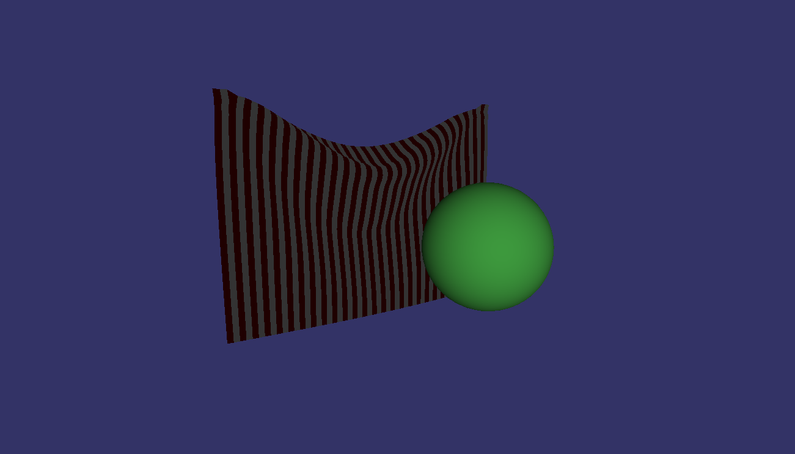
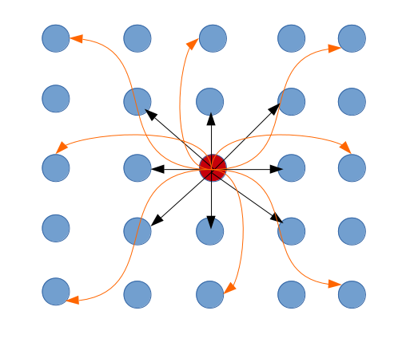

Ajinkya Gavane (2011B5A7527H), Sudarshan Ghonge (2011B5A7230H), Saurav Agarwalla (2011B5A7522H)

Our project entails implementing ball-stick model for cloth simulation.
$ make
We have used make to ease the process of compilation. Use make in the same directory to compile the files. Then run the created executable.
1.1. How to compile
The key-bindings along with their application are as shown below:
The implementation details are as follows:
The vector class includes various vector operations like addition, subtraction, multiplication and division with a scalar, magnitude, square of magnitude, dot product and cross product and vector initialisation.
The particle class contains the attributes and behaviour exhibited by the particles used in the simulation. The main attibutes includes:
The main behaviours (methods) of the particle include adding force to the particle, setting its offset position and making it unmovable.
The constraint involved makes sure that the distance between two specified particles remains constant. As shown in the figure below, there are a total of sixteen constraints for each internal particle from the original particle in question to its first and second nearest neighbours. 
This is the class that integrates all the other classes to create our final product - cloth. It has numerous methods to specify the number of particles along the height and width, adding constraints and drawing triangles as specified in our algorithm.
The forces acting on the cloth are gravity and the force exerted by the sphere on collision.
This integration scheme does not store velocity but computes it on the run. Given a particle whose position is x and velocity v, then in the timestep loop the new position x' and velocity v' are computed as: x' = x + vdt v' = v + adt where a = acceleration. In this method, instead of storing current position and velocity of a particle we store current position x and previous position x*. Keeping the timestamp fixed, the update rule (or integration step) is then: x' = 2x - x* + adt2 x* = x' The term 2x - x* = x + (x - x*) and (x - x*) is an approximation of current velocity.